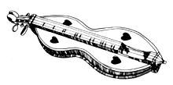

Conventional publishing wisdom claims that it's a mistake to run poetry in a "consumer" magazine. Although that may often be true, we're convinced that MOTHER's readers are the kind of people who look for beauty in the practical and search out practicality in the beautiful . . . and who realize that good poetry can be useful as well as inspiring. In fact, the best of poems can help us recognize the wonderfuland often well-hidden-similarities that all humans share . . . and, by doing so, can make each of us feel a little bit less alone. The poetry included in this occasional feature-be it brand-new or previously published, written by a recognized poet or a first-timer-will be material that, in the eyes of MOTHER's editors, helps us see ourselves in the words of others. It's that quality, and the fact that the work presented here will reflect the range of subject areas usually presented in this magazine, that gave this feature its name.
The Old Yellow Mutt
Her fur came in heavy in August, changed from gold to creamed coffee. I filled old jars with asters and goldenrod.
The old yellow mutt took up her winter spot on feed sacks weeks before first patches of frost stopped overnight in the fields. She whimpered at the screen door.
The cats looked back, smug in late summer sun, melted on the pine floors.
I don't know what the woolly worms will predict. It's not their time yet. They're youngsters compared to the mutt: wisdom creeps, comes slowly.
Bound to be a hard winter. Azaleas have set tight buds and the old yellow mutt moans in her sleep.
- Ree Young
Widow to Her Son
I have taken up the dulcimer again. I did not believe the songs would come back from so far, but they did. "Old Grey Goose" was easy, and the other joysome songs. I remember when your pa first come courting and we sat in the parlor with the double dulcimer between us and rubbed knees. The light from a coal oil lamp was small, but he was Jesus' own handsome man, and he taught me river runs, how to fret and feather the dark poplar into sweet freshets of song. Told me, knowing ma and daddy were in the kitchen listening for both sets of strings, that a -split quill caught off an angel's wing makes the best pick, and a dog's rib bone the best noter. He was a caution, and I reckoned we'd be married directly, and we were. I never thought these tunes would be so easy to find after all these years alone, and how far away they feel, hearing them on the one set of strings, since my shadow couldn't catch a tune if it had handles on it. Listen. You can hear the river rising.
- R.T. Smith
Originally published in Rural Route from Tamarack Editions and reprinted by permission of the poet
Traveling Camas Prairie
Late sun glazes the ground like a hint of twenty dollar gold in a burlap pocket; earth sees things complete-wheat-loam, black mud stubble promise, the rolling winter mix of farms.
The car is an impossible speck on great swells, my hands at the wheel aiming nowhere but the farm I never knew. Wash-outs wound the road like broken ice on the canyon creek.
Slowing back to a turn-out I stop, stare long at someone's old place. There is a light, a cord stacked out by the shed, cattle bedding down in straw, chimney spelling warm.
So long the place looks good. Can't stay. I remember listening in school when my farmer teacher talked of a way with the land. Roads lead nowhere if not to a place called home.
-William Johnson
Originally published in Snapdragon. Vol. No 2(Spring, 1983) by the University of Idaho and reprinted by permission of the poet.
Submissions to Fieldbook are welcomed. However, please take the time to look over what we've published. If you can't honestly say you can equal or better that body of work, don't send us anything. Furthermore, all unsolicited submissions should be sent without selfaddressed, stamped envelopes and should be addressed specifically to Fieldbook. We won't be returning or commenting on unused poems: Only those accepted for publication will be acknowledged.
|
 |
|
|